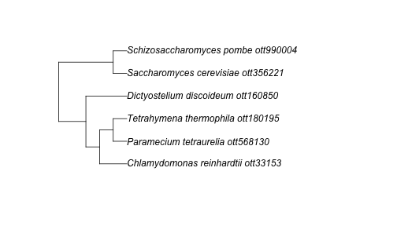

Connecting data to Open Tree trees
David Winter
2026-01-15
Source:vignettes/data_mashups.Rmd
data_mashups.RmdCombining data from OToL and other sources.
One of the major goals of rotl is to help users combine
data from other sources with the phylogenetic trees in the Open Tree
database. This examples document describes some of the ways in which a
user might connect data to trees from Open Tree.
Get Open Tree IDs to match your data.
Let’s say you have a dataset where each row represents a measurement taken from one species, and your goal is to put these measurements in some phylogenetic context. Here’s a small example: the best estimate of the mutation rate for a set of unicellular Eukaryotes along with some other property of those species which might explain the mutation rate:
csv_path <- system.file("extdata", "protist_mutation_rates.csv", package = "rotl")
mu <- read.csv(csv_path, stringsAsFactors = FALSE)
mu## species mu pop.size genome.size
## 1 Tetrahymena thermophila 7.61e-12 1.12e+08 1.04e+08
## 2 Paramecium tetraurelia 1.94e-11 1.24e+08 7.20e+07
## 3 Chlamydomonas reinhardtii 2.08e-10 1.00e+08 1.12e+08
## 4 Dictyostelium discoideum 2.90e-11 7.40e+06 3.40e+07
## 5 Saccharomyces cerevisiae 3.30e-10 1.00e+08 1.25e+08
## 6 Saccharomyces pombe 2.00e-10 1.00e+07 1.25e+08If we want to get a tree for these species we need to start by
finding the unique ID for each of these species in the Open Tree
database. We can use the Taxonomic Name Resolution Service
(tnrs) functions to do this. Before we do that we should
see if any of the taxonomic contexts, which can be used to narrow a
search and avoid conflicts between different codes, apply to our group
of species:
## Possible contexts:
## Animals
## Birds, Tetrapods, Mammals, Amphibians, Vertebrates
## Arthropods, Molluscs, Nematodes, Platyhelminthes, Annelids
## Cnidarians, Arachnids, Insects
## Fungi
## Basidiomycetes, Ascomycetes
## All life
## Bacteria
## SAR group, Archaea, Excavata, Amoebozoa, Centrohelida
## Haptophyta, Apusozoa, Diatoms, Ciliates, Forams
## Land plants
## Hornworts, Mosses, Liverworts, Vascular plants, Club mosses
## Ferns, Seed plants, Flowering plants, Monocots, Eudicots
## Rosids, Asterids, Asterales, Asteraceae, Aster
## Symphyotrichum, Campanulaceae, LobeliaHmm, none of those groups contain all of our species. In this case we
can search using the All life context and the function
tnrs_match_names:
taxon_search <- tnrs_match_names(names = mu$species, context_name = "All life")
knitr::kable(taxon_search)| search_string | unique_name | approximate_match | score | ott_id | is_synonym | flags | number_matches |
|---|---|---|---|---|---|---|---|
| tetrahymena thermophila | Tetrahymena thermophila | FALSE | 1 | 180195 | FALSE | 1 | |
| paramecium tetraurelia | Paramecium tetraurelia | FALSE | 1 | 568130 | FALSE | 1 | |
| chlamydomonas reinhardtii | Chlamydomonas reinhardtii | FALSE | 1 | 33153 | FALSE | 1 | |
| dictyostelium discoideum | Dictyostelium discoideum | FALSE | 1 | 160850 | FALSE | 1 | |
| saccharomyces cerevisiae | Saccharomyces cerevisiae | FALSE | 1 | 356221 | FALSE | 1 | |
| saccharomyces pombe | Schizosaccharomyces pombe | FALSE | 1 | 990004 | TRUE | 1 |
Good, all of our species are known to Open Tree. Note, though, that
one of the names is a synonym. Saccharomyces pombe is older
name for what is now called Schizosaccharomyces pombe. As the
name suggests, the Taxonomic Name Resolution Service is designed to deal
with these problems (and similar ones like misspellings), but it is
always a good idea to check the results of tnrs_match_names
closely to ensure the results are what you expect.
In this case we have a good ID for each of our species so we can move
on. Before we do that, let’s ensure we can match up our original data to
the Open Tree names and IDs by adding them to our
data.frame:
mu$ott_name <- unique_name(taxon_search)
mu$ott_id <- taxon_search$ott_idFind a tree with your taxa
Now let’s find a tree. There are two possible options here: we can search for published studies that include our taxa or we can use the ‘synthetic tree’ from Open Tree. We can try both approaches.
Published trees
Before we can search for published studies or trees, we should check out the list of properties we can use to perform such searches:
## $tree_properties
## [1] "ot:specifiedRoot" "ot:unrootedTree" "ot:nodeLabelTimeUnit" "xsi:type" "ot:MRCAName" "ot:nodeLabelDescription" "ot:nearestTaxonMRCAOttId"
## [8] "ot:reasonsToExcludeFromSynthesis" "ot:curatedType" "ot:nearestTaxonMRCAName" "ot:studyId" "ot:nodeLabelMode" "rootedge" "nodeById"
## [15] "tb:type.tree" "ot:branchLengthDescription" "ot:messages" "ot:rootNodeId" "ot:inGroupClade" "ot:ottId" "ot:branchLengthMode"
## [22] "ot:MRCAOttId" "ot:ottTaxonName" "tb:quality.tree" "tb:kind.tree" "ot:outGroupEdge" "ntips" "edgeBySourceId"
## [29] "label" "meta" "tb:ntax.tree" "ot:tag" "ot:branchLengthTimeUnit"
##
## $study_properties
## [1] "tb:identifier.study.tb1" "id" "ot:taxonLinkPrefixes" "ot:studyYear" "prism:publicationName" "dc:title" "prism:creationDate" "xmlns"
## [9] "skos:changeNote" "skos:historyNote" "ot:notIntendedForSynthesis" "ot:otusElementOrder" "dc:date" "xhtml:license" "prism:startingPage" "prism:publicationDate"
## [17] "ot:focalCladeOTTTaxonName" "prism:section" "prism:pageRange" "ot:messages" "ot:studyPublicationReference" "ot:curatorName" "ot:dataDeposit" "prism:number"
## [25] "ot:agents" "dc:publisher" "treesById" "dcterms:bibliographicCitation" "ot:treesElementOrder" "prism:modificationDate" "tb:identifier.study" "about"
## [33] "ntrees" "nexmljson" "ot:comment" "dc:contributor" "dc:creator" "prism:volume" "tb:title.study" "treebaseId"
## [41] "prism:endingPage" "generator" "version" "ot:studyId" "ot:candidateTreeForSynthesis" "otusById" "prism:doi" "dc:subject"
## [49] "ot:studyPublication" "ot:focalClade" "ot:annotationEvents" "ot:tag" "nexml2json"We have ottIds for our taxa, so let’s use those IDs to
search for trees that contain them. Starting with our first species
Tetrahymena thermophila we can use
studies_find_trees to do this search.
studies_find_trees(property = "ot:ottId", value = as.character(ott_id(taxon_search)[1]))## study_ids n_trees tree_ids candidate study_year title study_doi
## 1 ot_1587 1 tree1 2015 'Phylogenomic analyses reveal subclass Scuticociliatia as the sister group of subclass Hymenostomatia within class Oligohymenophorea' http://dx.doi.org/10.1016/j.ympev.2015.05.007
## 2 ot_1589 1 tree1 2015 'Phylogenomic analyses reveal subclass Scuticociliatia as the sister group of subclass Hymenostomatia within class Oligohymenophorea' http://dx.doi.org/10.1016/j.ympev.2015.05.007
## 3 ot_2037 4 tree10, tree11, tree12, tree13 2018 http://dx.doi.org/10.1038/s41586-018-0708-8
## 4 ot_409 2 tree1, tree2 tree2 2015 Tree of life reveals clock-like speciation and diversification http://dx.doi.org/10.1093/molbev/msv037
## 5 ot_564 1 Tr85317 Tr85317 2015 'The alveolate translation initiation factor 4E family reveals a custom toolkit for translational control in core dinoflagellates' http://dx.doi.org/10.1186/s12862-015-0301-9
## 6 ot_579 1 Tr60046 2013 'Convergent evolution of heat-inducibility during subfunctionalization of the Hsp70 gene family' http://dx.doi.org/10.1186/1471-2148-13-49
## 7 ot_700 1 tree1 tree1 2016 'A new view of the tree of life' http://dx.doi.org/10.1038/nmicrobiol.2016.48
## 8 ot_73 1 tree1 tree1 2013 Deep relationships of Rhizaria revealed by phylogenomics: A farewell to Haeckel’s Radiolaria http://dx.doi.org/10.1016/j.ympev.2012.12.011
## 9 ot_766 1 Tr85440 2015 'Bacterial proteins pinpoint a single eukaryotic root' http://dx.doi.org/10.1073/pnas.1420657112
## 10 ot_767 1 tree1 tree1 2016 'Untangling the early diversification of eukaryotes: a phylogenomic study of the evolutionary origins of Centrohelida http://dx.doi.org/10.1098/rspb.2015.2802
## 11 ot_87 1 Tr64119 Tr64119 2014 'Dinoflagellate phylogeny revisited: Using ribosomal proteins to resolve deep branching dinoflagellate clades' http://dx.doi.org/10.1016/j.ympev.2013.10.007
## n_matched_trees match_tree_ids
## 1 1 tree1
## 2 1 tree1
## 3 3 tree10, tree13, tree11
## 4 1 tree2
## 5 1 Tr85317
## 6 1 Tr60046
## 7 1 tree1
## 8 1 tree1
## 9 1 Tr85440
## 10 1 tree1
## 11 1 Tr64119
## [ reached 'max' / getOption("max.print") -- omitted 16 rows ]Well… that’s not very promising. We can repeat that process for all of the IDs to see if the other species are better represented.
hits <- lapply(mu$ott_id, studies_find_trees, property = "ot:ottId", detailed = FALSE)
sapply(hits, function(x) sum(x[["n_matched_trees"]]))## [1] 51 51 128 71 18 89OK, most of our species are not in any of the published trees available. You can help fix this sort of problem by making sure you submit your published trees to Open Tree.
A part of the synthesis tree
Thankfully, we can still use the complete Tree of Life made from the
combined results of all of the published trees and taxonomies that go
into Open Tree. The function tol_induced_subtree will fetch
a tree relating a set of IDs.
Using the default arguments you can get a tree object into your R session:
ott_in_tree <- ott_id(taxon_search)[is_in_tree(ott_id(taxon_search))]
tr <- tol_induced_subtree(ott_ids = ott_in_tree)## Warning in collapse_singles(tr, show_progress): Dropping singleton nodes with labels: mrcaott2ott276, mrcaott2ott142555, mrcaott2ott1551, mrcaott2ott7623, Chloroplastida ott361838, Chlorophyta ott979501, mrcaott185ott42071, mrcaott185ott1426, mrcaott1426ott1544,
## mrcaott1544ott8659, mrcaott1544ott15345, mrcaott1544ott9282, mrcaott9389ott818260, mrcaott9389ott23557, mrcaott23557ott527099, mrcaott148ott902, SAR ott5246039, Alveolata ott266751, Ciliophora (phylum in subkingdom SAR) ott302424, Intramacronucleata ott340382,
## mrcaott1546ott1671, Conthreep ott5248773, mrcaott1671ott16129, Peniculia ott1002116, Paramecium (genus in subkingdom SAR) ott568126, mrcaott11752ott13570, Hymenostomatia ott5257367, Tetrahymena (genus in subkingdom SAR) ott47284, mrcaott295406ott523463,
## mrcaott295406ott523462, mrcaott3973ott4738988, Amoebozoa ott1064655, mrcaott3973ott15653, mrcaott3973ott26103, mrcaott26103ott273110, mrcaott26103ott229626, Dictyostelia ott835575, mrcaott26103ott59686, Dictyosteliales ott4008839, Dictyosteliaceae ott4008841,
## Dictyostelium ott999665, mrcaott42ott240665, Opisthokonta ott332573, Nucletmycea ott5246132, Fungi ott352914, mrcaott109ott3465, mrcaott109ott67172, mrcaott109ott1423, mrcaott109ott9352, h2007-2 ott5576447, h2007-1 ott5584405, Dikarya ott656316,
## mrcaott235ott3445, saccharomyceta ott1098854, Saccharomycotina ott971714, Saccharomycetes (class in h2007-2) ott989999, Saccharomycetales ott4085960, Saccharomycetaceae ott989994, Saccharomyces ott908546, Schizosaccharomycetes ott921286, Schizosaccharomycetidae
## ott5670481, Schizosaccharomycetales ott508517, Schizosaccharomycetaceae ott990009, Schizosaccharomyces ott990008
plot(tr)
Connect your data to the tips of your tree
Now we have a tree for of our species, how can we use the tree and the data together?
The package phylobase provide an object class called
phylo4d, which is designed to represent a phylogeny and
data associated with its tips. In order to get our tree and data into
one of these objects we have to make sure the labels in the tree and in
our data match exactly. That’s not quite the case at the moment (tree
labels have underscores and IDs appended):
mu$ott_name[1]## $`Tetrahymena thermophila`
## [1] "Tetrahymena thermophila"
tr$tip.label[4]## [1] "Dictyostelium_discoideum_ott160850"rotl provides a convenience function
strip_ott_ids to deal with these.
tr$tip.label <- strip_ott_ids(tr$tip.label, remove_underscores = TRUE)
tr$tip.label %in% mu$ott_name## [1] TRUE TRUE TRUE TRUE TRUE TRUEOk, now the tips are together we can make a new dataset. The
phylo4d() functions matches tip labels to the row names of
a data.frame, so let’s make a new dataset that contains
just the relevant data and has row names to match the tree
## Error in `library()`:
## ! there is no package called 'phylobase'
mu_numeric <- mu[, c("mu", "pop.size", "genome.size")]
rownames(mu_numeric) <- mu$ott_name
tree_data <- phylo4d(tr, mu_numeric)## Error in `phylo4d()`:
## ! could not find function "phylo4d"And now we can plot the data and the tree together
plot(tree_data)## Error:
## ! object 'tree_data' not foundFind external data associated with studies, trees and taxa from Open Tree
In the above example we looked for a tree that related species in another dataset. Now we will go the other way, and try to find data associated with Open Tree records in other databases.
Get external data from a study
Let’s imagine you were interested in extending or reproducing the
results of a published study. If that study is included in Open Tree you
can find it via studies_find_studies or
studies_find_trees and retrieve the published trees with
get_study. rotl will also help you find
external. The function study_external_IDs retrieves the DOI
for a given study, and uses that to gather some more data:
extra_data <- try(study_external_IDs("pg_1980"), silent = TRUE)## Warning in check_xml_errors(x): Invalid db name specified: popset
if (!inherits(extra_data, "try-error")) {
extra_data
}Here the returned object contains an external_data_url
(in this case a link to the study in Treebase), a pubmed ID for the
paper and a vector IDs for the NCBI’s nucleotide database. The packages
treebase and rentrez provide functions to make
use of these IDs within R.
As an example, let’s use rentrez to download the first
two DNA seqences and print them.
library(rentrez)
seqs <- try(entrez_fetch(db = "nucleotide", id = extra_data$nucleotide_ids[1:2], rettype = "fasta"), silent = TRUE)
if (inherits(seqs, "try-error")) {
cat("NCBI temporarily down.")
} else {
cat(seqs)
}## NCBI temporarily down.You could further process these sequences in R with the function
read.dna from ape or save them to disk by
specifying a file name with cat.
Find a OTT taxon in another taxonomic database
It is also possible map an Open Tree taxon to a record in another
taxonomic database. For instance, if we wanted to search for data about
one of the tips of the sub-tree we fetched in the example above we could
do so using taxon_external_IDs:
Tt_ids <- taxon_external_IDs(mu$ott_id[2])
Tt_ids## source id
## 1 silva AY102613
## 2 ncbi 5888
## 3 gbif 7415807A user could then use rgbif to find locality records
using the gbif ID or rentrez to get genetic or bibliometric
data about from the NCBI’s databases.
What next
The demonstration gets you to the point of visualizing your data in a
phylogenetic context. But there’s a lot more you do with this sort of
data in R. For instance, you could use packages like ape,
caper, phytools and mcmcGLMM to
perform phylogenetic comparative analyses of your data. You could gather
more data on your species using packages that connect to trait databases
like rfishbase, AntWeb or rnpn
which provides data from the US National Phenology Network. You could
also use rentrez to find genetic data for each of your
species, and use that data to generate branch lengths for the
phylogeny.